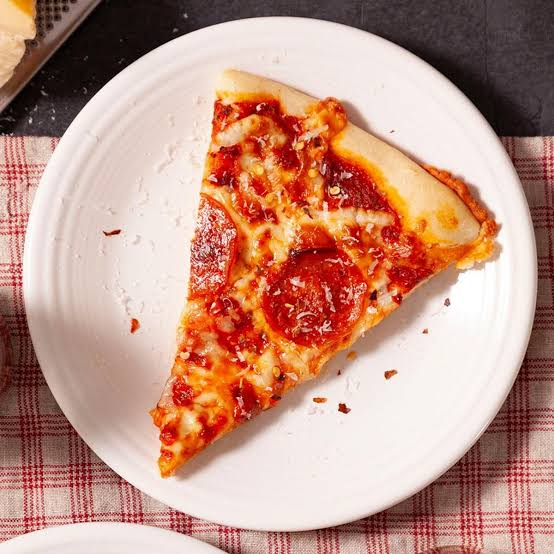

Worlds Best Pizza
Home

- 2 ½ cups all-purpose or bread flour
- 1 packet (2 ¼ teaspoons) active dry yeast
- 1 teaspoon sugar
- 1 cup warm water
- 2 tablespoons olive oil
- 1 teaspoon salt
- ½ cup pizza sauce or canned tomato sauce
- 1 ½ cups shredded mozzarella cheese
-
Toppings of choice (pepperoni, sliced mushrooms, bell peppers, fresh
basil)
-
Activate the Yeast: In a bowl, combine the warm water,
sugar, and active dry yeast. Let it sit for about 5 to 10 minutes until
the mixture becomes frothy and bubbly.
-
Mix and Knead the Dough: Add the olive oil, salt, and
flour to the yeast mixture. Stir until a soft dough forms, then turn it
out onto a lightly floured surface and knead for 5–7 minutes until
smooth and elastic.
-
Let the Dough Rise: Place the dough in a lightly oiled
bowl, cover it with a damp cloth or plastic wrap, and let it rise in a
warm spot for about 1 hour, or until it doubles in size.
-
Shape the Crust: Preheat your oven to 475°F (245°C).
Punch down the dough and press or roll it out into a 12-inch circle on a
baking sheet or pizza stone dusted with cornmeal.
-
Assemble and Bake: Spread the sauce evenly over the
dough, leaving a small border for the crust. Sprinkle on the mozzarella
and add your desired toppings. Bake for 12 to 15 minutes until the crust
is golden and the cheese is melted and bubbling.